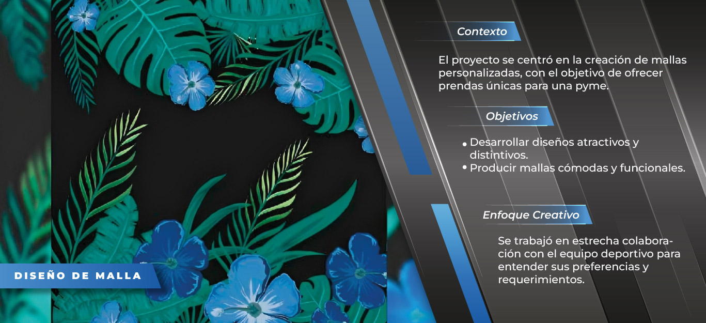
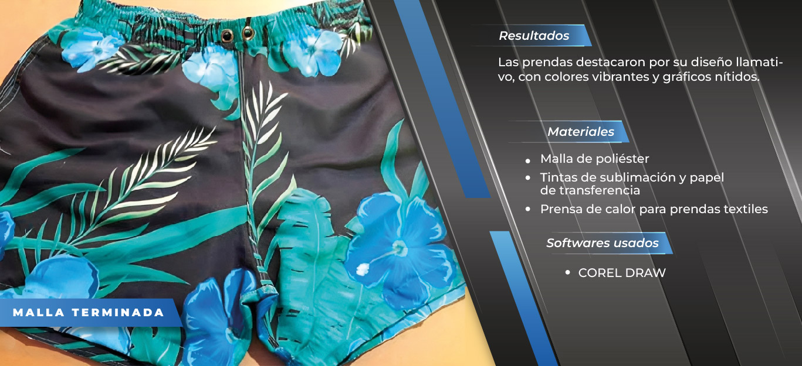
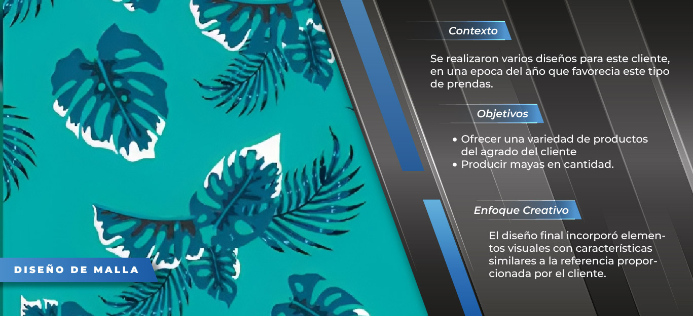
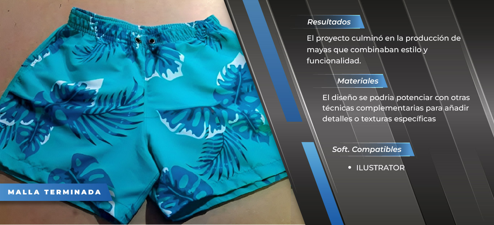
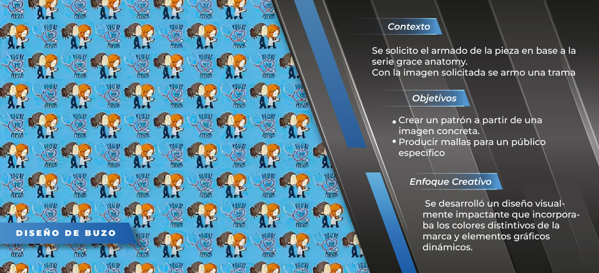
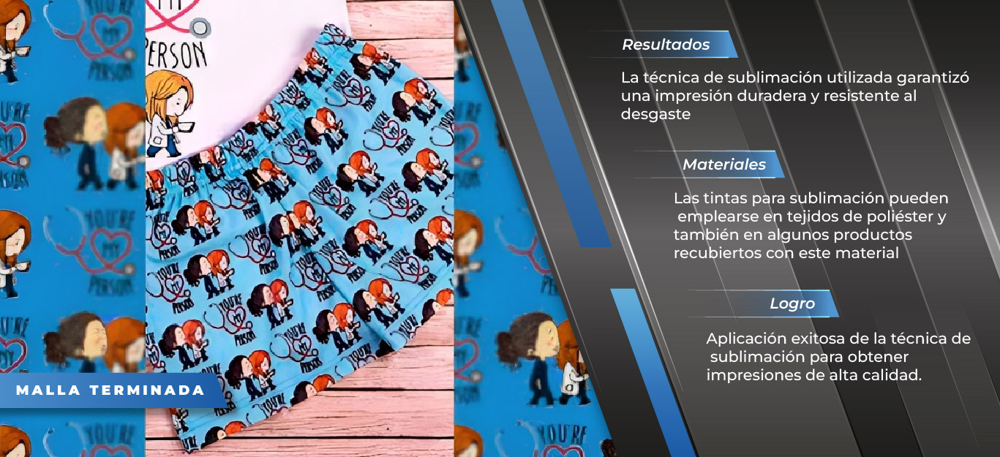
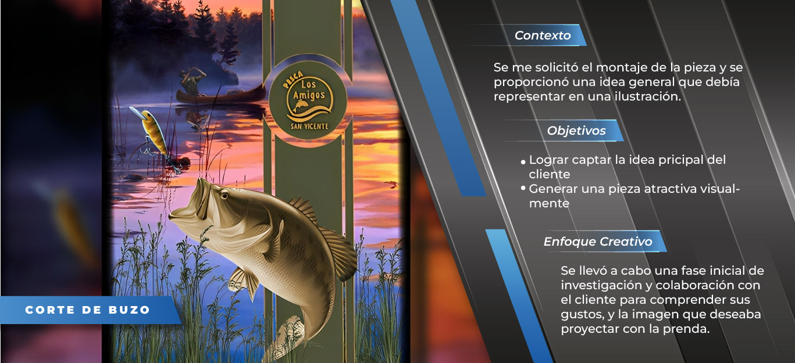
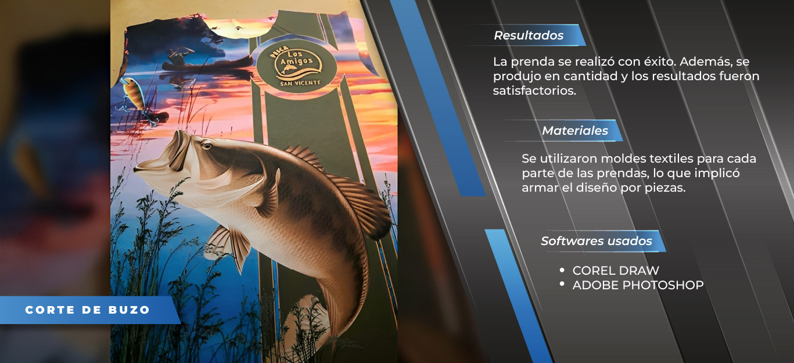
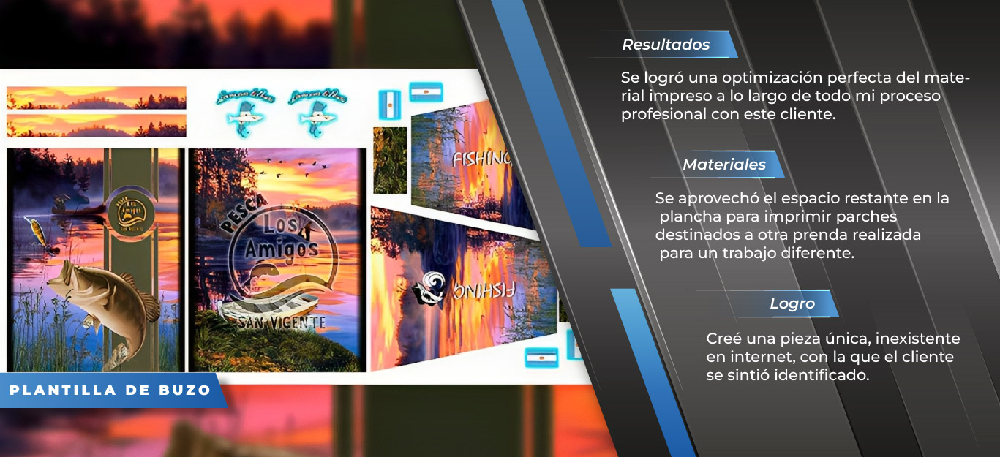

 DISEÑO
El cliente solicita mayas personalizadas para temporada de verano
 RESULTADO
Utilizamos tela de poliester, sublimadas en presa de calor
 DISEÑO
Segunda pieza para el mismo cliente con colores mas vibrantes
 RESULTADO
La producción en general combinaban estilo y funcionalidad
 DISEÑO
Maya con un tramado de la inconica serie "grace anatomy"
 RESULTADO
Se aprovechó el éxito de la serie para una propuesta atractiva
 DISEÑO
Buzo con diseño de una escena para aficionados a la pesca
 RESULTADO
Se ajustó el tamaño para mantener la resolución del buzo en la impresión
 DISEÑO
Se diseñó la pieza completa, abarcando frente y mangas para optimizar la impresión